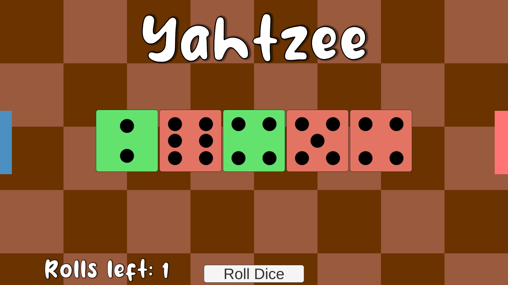

Yahtzee
Yahtzee is a game about dice rolling. Your goal is to roll dice and fill in categories with
different dice combinations. Each category you can fill will earn you points. You will play against
another player, and whoever has the most points after finishing all categories will win the game!
Yahtzee was created during my independent study at the University of Wisconsin - Whitewater. I wanted to learn more about networking and how to create functional servers that numerous machines can interact with. I started by making a chatroom on a website where multiple users could go on and talk to one another. Since I am a game developer, I decided to try and use what I learned and bring it to a more interactive level.
This project has no trace of mlAPI, Photon, Mirror, or other unity multiplayer service. Instead, my professor and I worked together to build multiplayer functionality from scratch using node.js. Our server is more or less just a bridge for clients to access and send information. All the game logic is on the Unity side of the game, not the server. The server simply sends the information to the other client when an action is taken.
Engine: Unity
Software Used: Visual Studio
Languages: C#, JavaScript, Node.js
Status: Complete
Download here!
Yahtzee was created during my independent study at the University of Wisconsin - Whitewater. I wanted to learn more about networking and how to create functional servers that numerous machines can interact with. I started by making a chatroom on a website where multiple users could go on and talk to one another. Since I am a game developer, I decided to try and use what I learned and bring it to a more interactive level.
This project has no trace of mlAPI, Photon, Mirror, or other unity multiplayer service. Instead, my professor and I worked together to build multiplayer functionality from scratch using node.js. Our server is more or less just a bridge for clients to access and send information. All the game logic is on the Unity side of the game, not the server. The server simply sends the information to the other client when an action is taken.
Engine: Unity
Software Used: Visual Studio
Languages: C#, JavaScript, Node.js
Status: Complete
Download here!
Unity Side
I decided to build this game in Unity since I needed a good looking GUI for the player to interact with, and since
I am most comfortable with Unity, I felt it was the most efficient engine to use for this project.

Since there are thirteen different categories in Yahtzee that each player needs to fill, each category also needed to have its own algorithm to see whether or not the dice combination would give points. For example, the Three of a Kind category has a unique algorithm that uses mergesort to see if there were three of the same dice in the combination.
My reasoning for using mergesort was that I needed an efficient way of sorting my dice combination for some algorithms. By sorting the combination, I am able to loop through the combination in search of a three of a kind. If there were three "ones" in the combination, then the "ones" would have been moved to the front of the array, and then I would find that the first three numbers are the same.
Yahtzee Algorithms
Since there are thirteen different categories in Yahtzee that each player needs to fill, each category also needed to have its own algorithm to see whether or not the dice combination would give points. For example, the Three of a Kind category has a unique algorithm that uses mergesort to see if there were three of the same dice in the combination.
My reasoning for using mergesort was that I needed an efficient way of sorting my dice combination for some algorithms. By sorting the combination, I am able to loop through the combination in search of a three of a kind. If there were three "ones" in the combination, then the "ones" would have been moved to the front of the array, and then I would find that the first three numbers are the same.
GUI
By using Unity, I am able to have a smooth gameplay for both players, and that really starts with the GUI. Both players have two different "tabs," one on each side of the screen. The blue tab will slide open a list of categories that are yours to fill, and will also show your own total score from all categories. The red tab will slide open the opponent's categories, and whenever they keep a combination, you will see where they kept it, what category they used, and the dice that they filled that category with.

Networking Side
This is the part where my independent study takes over. Right now, the server is being hosted by Heroku. When a player
runs the game, we have a connectionManager that calls the server from the Heroku address. From there, the player is
able to play against another player who also connects.
The only action that a player needs to send information for is when they keep a combination.
The information that is required to be sent would be the entire combination of dice, as well as a category ID. That way the other player will know which category is going to be filled up, and with what dice.
Once I know the combination and the category ID, I then create a DiceCombination class to hold that information, and I take that object and turn it into a Json object. Afterwards, I emit the Json object to the server.
Once the server has the information, its only job is to broadcast that object to all other clients. Since it does not hold the game logic, it does not need to send information back to the client that started the action. After the broadcast, in the Unity project I have a listener searching for new combinations from the other player. Once they recieve that combination, it will then be distributed into the opponent's tab. In order for the game to finish, both players need to send this type of information thirteen times, which is the amount of categories that need to be filled.
The Bridge
The only action that a player needs to send information for is when they keep a combination.
The information that is required to be sent would be the entire combination of dice, as well as a category ID. That way the other player will know which category is going to be filled up, and with what dice.
Once I know the combination and the category ID, I then create a DiceCombination class to hold that information, and I take that object and turn it into a Json object. Afterwards, I emit the Json object to the server.
Once the server has the information, its only job is to broadcast that object to all other clients. Since it does not hold the game logic, it does not need to send information back to the client that started the action. After the broadcast, in the Unity project I have a listener searching for new combinations from the other player. Once they recieve that combination, it will then be distributed into the opponent's tab. In order for the game to finish, both players need to send this type of information thirteen times, which is the amount of categories that need to be filled.
Conclusion
Initially, it was not my goal to use what I learned in a game design project. Since I am a double major with Computer Science, I wanted to try and add more to that side of my studies. However, I think this project fulfilled its purpose nicely. It was a small and simple game that had no complications on the Unity side, and because of that I was able to focus on the networking. It may be a simple bridge for sending information, but I learned a lot about networking and the inner workings of multiplayer games. It was a fun project to make.
Various Pictures
